Combox Multimedia and Combox Emergency Call
Combox Multimedia And Combox Emergency Call
Combox multimedia (CBX-MEDIA) and Combox emergency call (CBX-ECALL)
Starting in 03/2010, the interface box, the interface box High and the Telematic Control Unit will gradually be replaced by the Combox. The Combox will be introduced later for all series.
The Combox provides the customer with new functions. Some of the new functions are:
- Connection of audio devices via Bluetooth
- Simultaneous Bluetooth pairing of mobile phones and audio devices in the telephone
- Contacts with images
- Customer-initiated software update (KISA)
- Connection of certain iPods via cable (discontinuation of Y-cable)
- Display of album cover (in the case of iPod, player for Media Transfer Protocol, MP3 via Universal Serial Bus)
- Office SMS text message, calendar and notes from mobile phone
- Office with e-mail from mobile phone (likely to be available as of 09/2010)
- Support of video mode via 2 cables (likely to be available as of 09/2010)
- Internet via mobile phone (likely to be available as of 09/2010)
NOTE: Follow the instructions in the Owner's Handbook.
The customer information is described in the Owner's Handbook.
Brief component description
The following components for the Combox are described:
- Combox multimedia (CBX-MEDIA) and Combox emergency call (CBX-ECALL)
- Aerials
- Emergency loudspeaker
- Microphone and microphone 2
- Eject box front and rear
- USB audio interface
- USB hub
Combox multimedia (CBX-MEDIA) and Combox emergency call (CBX-ECALL)
The Combox is installed in the rear left of the luggage compartment. The Combox housing is screwed directly onto the body.
With High equipment, the Combox consists of 2 components:
- Main board: Combox multimedia (CBX-MEDIA)
- Emergency call printed circuit board: Combox emergency call (CBX-ECALL)
In principle, these are 2 separate control units in one housing. These two control units also respond during the vehicle test in the diagnosis.
If CBX-MEDIA and CBX-ECALL are fitted, the Combox has telematics capability (emergency call).
The Combox (CBX-MEDIA) is a MOST device (CBX-ECALL is a CAN control unit).
The front power distribution box supplies the Combox with terminal 30F. In the case of a Combox with telephone or audio device connection, the rear power distribution box supplies the Combox with terminal 30B.
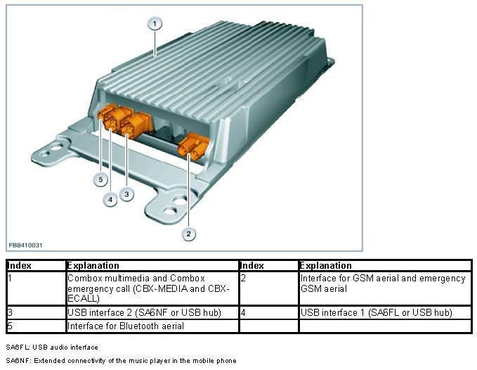
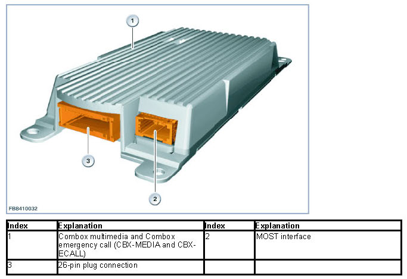
NOTE: Note the colour coding of the 26-pin connector.
In the case of a Combox for the vehicle electrical system 2010, the 26-pin plug connection is white and for the vehicle electrical system 2000 it is black in order to provide an easy distinction.
All dependencies on the various optional equipment are realized via a control unit.
The following optional equipment is realized with the Combox:
SA644 Mobile phone preparation with Bluetooth interface (telephoning via Bluetooth, hands-free mode)
SA633 Basic fittings for mobile phone Business(as SA644, prepared for telematics)
SA620 Voice control
SA6FL USB audio interface
SA6NF Extended connectivity of the music player in the mobile phone
SA612 BMW Assist (telematics including emergency call)
SA616 BMW Online including Internet (free surfing, data communication, browser is an element of the headunit)
SA6AA BMW TeleServices
Aerials
Different aerials are required for the functions telephone and telematics:
- Roof-mounted aerial with 2 telephone aerials and 1 GPS aerial
- Bluetooth aerial
- Emergency GSM aerial
- Telephone aerial, bumper
Roof aerial
The housing of the roof-mounted aerial contains the following aerials:
- Telephone aerial (GSM 1) for mobile phone
(GSM stands for Global Standard for Mobile Communications)
- Telephone aerial (GSM 2) for telematics services
- GPS aerial
(GPS stands for Global Positioning System)
Within the scope of certain optional equipment, further additional aerials which are not for the telephone or telematics may be installed in the roof-mounted aerial (e. g. Digital Audio Broadcasting, Satellite Digital Audio Radio Service).
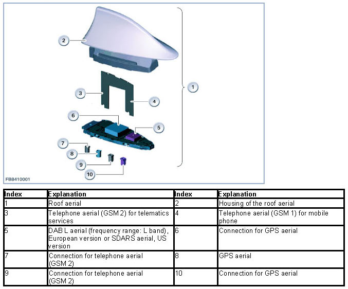
Bluetooth aerial
As of 03/2010, a new Bluetooth aerial will be installed.
The Bluetooth aerial is the transceiver aerial for the Combox. Among other things, there is a Bluetooth module installed in the Combox. The Bluetooth module is the interface between the Combox and the mobile phone and the Bluetooth handset. The Bluetooth module is connected to the Bluetooth aerial via an aerial line.
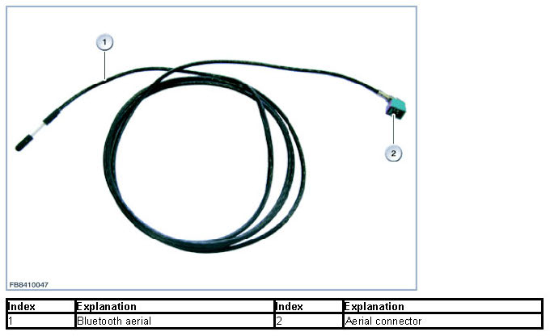
Emergency GSM aerial
The emergency GSM aerial is secured to the storage shelf.
If the restraint systems are activated, the ACSM transmits a signal to the Combox. The control unit automatically initiates an emergency call, which also contains the location of the vehicle.
There is an aerial selector in the Combox (only where a CBX-ECALL is fitted). The aerial selector is used to switch over to the emergency GSM aerial if the GSM aerial in the roof-mounted aerial fails (e.g. due to an accident).
Switch-over is carried out automatically if the GSM aerial in the roof-mounted aerial has poorer reception than the emergency GSM aerial.
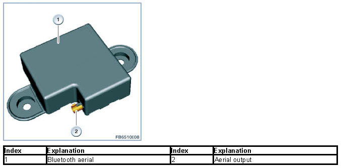
Telephone aerial, bumper
The bumper telephone aerial is the transceiver aerial for the rear compartment telephone. The bumper telephone aerial is fitted depending on the selected optional equipment.
A connection with the GSM network is established with the help of the bumper telephone aerial. The aerial is divided into a left and right section to reduce shadowing by the vehicle. The division of the aerial improves the receiving power.
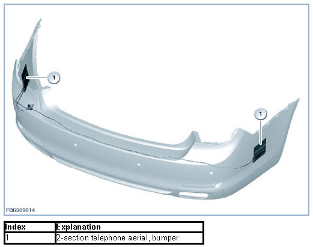
Emergency loudspeaker
If an emergency call is made, the Service Provider endeavors to establish voice contact with the occupants of the vehicle. This voice contact enables the Service Provider to obtain further information about the accident (accident severity, number of people injured). In this way, appropriate rescue measures can be initiated.
Whenever voice contact is established, the occupant is able to hear the Service Provider through the emergency loudspeaker. For hands-free mode, the occupant uses the hands-free microphones.
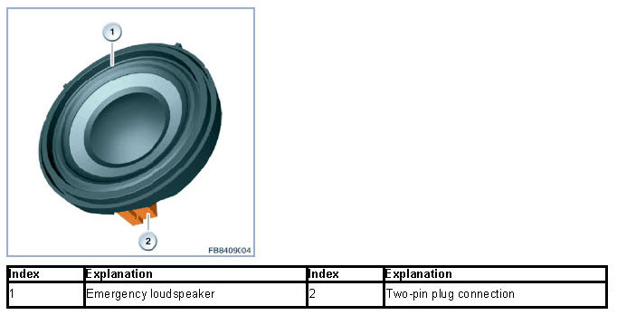
Microphone and microphone 2
The 2 hands-free microphones (microphone and microphone 2) are installed in the outer left and right sides of the roofliner near the sun visors. The 2 microphones are used for hands-free mode during telephone operation and for voice input for the Active Voice Recognition.
The microphones work with full duplex transmission. This means that the audio frequency signals are activated for both parties. It is possible to speak and listen during the same call.
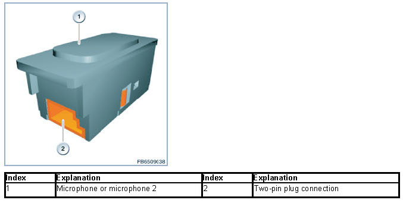
In the case of series before F0x, there is only one microphone.
Eject box, front
In the centre armrest, there is the eject box with the fixture for attachment of the mobile phone while on the road via the snap-in adapter. The mobile phone is charged and connected with the roof-mounted aerial via the eject box.
Depending on the mobile phone used, a special snap-in adapter may be required. In vehicle-specific cases, the snap-in adapter is inserted into the base plate instead of the storage tray and establishes the connection between base plate and mobile phone. The snap-in adapters are only available for mobile phones approved by the BMW Group.
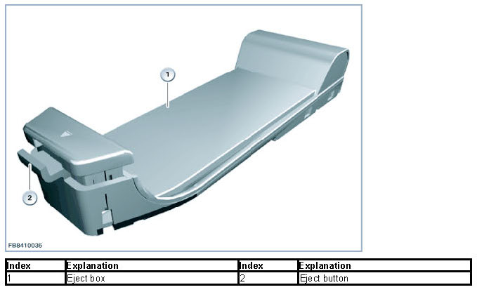
NOTE: Eject box for rear compartment telephone.
In the case of optional equipment rear compartment telephone, there is one eject box each for mobile phone and handset in the rear centre armrest.
USB audio interface
The audio socket (AUX-IN connection) can be used to connect an external audio source (e. g. MP3-or CD player) via a 3.5 mm jack plug. The unit is operated on the operating elements of the external audio source. The AUX-IN connection with USB port (SA6FL USB audio interface) is available as optional equipment. External audio sources with USB port are integrated in the vehicle's entertainment system via this USB audio interface (switched). A connection for Smartphones is offered for connection of the MP3-player in the mobile phone (SA6NF Extended connectivity of the music player in the mobile phone).
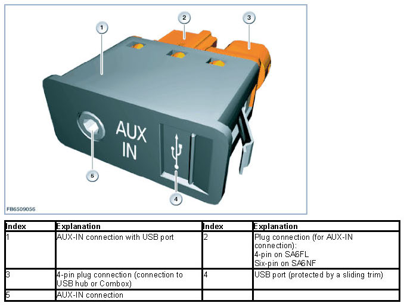
USB hub
The USB hub is used to extend the line (ensuring current flow). The USB hub contains an active USB signal amplifier. The USB hub has 2 inputs and 1 output for USB. The USB signal amplifier compensates for the power loss in the USB connection.
The USB hub has its own voltage supply (terminal 30B). This means that the USB hub can supply each device connected to the input with a current of up to 500 mA. The voltage transformer in the USB hub outputs a maximum of 5 V. The voltage is pending at the active USB signal amplifier and at the inputs.
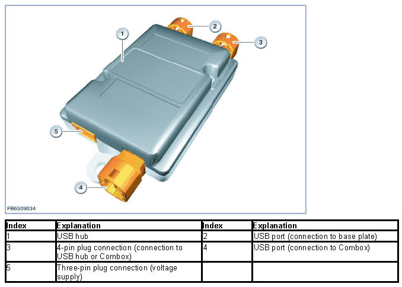
Functional networking
The following functional networks are described:
- Telematics and telephone
- Telephone
- USB audio interface (SA6FL) or extended connectivity of the music player in the mobile phone (SA6FN)
Functional networking telematics and telephone
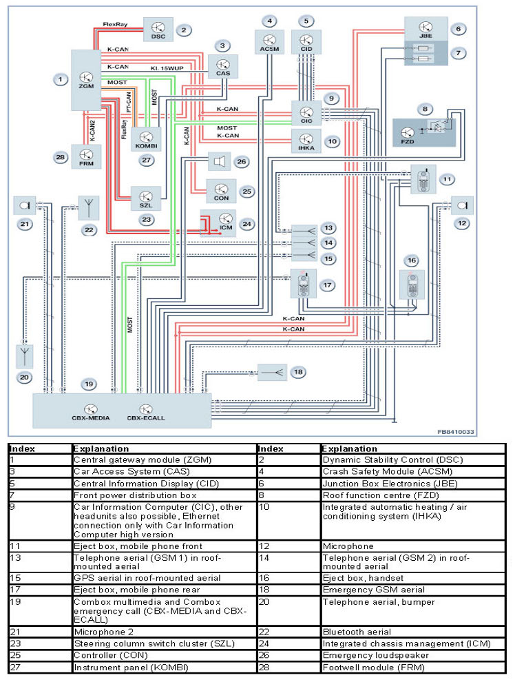
Functional networking, telephone
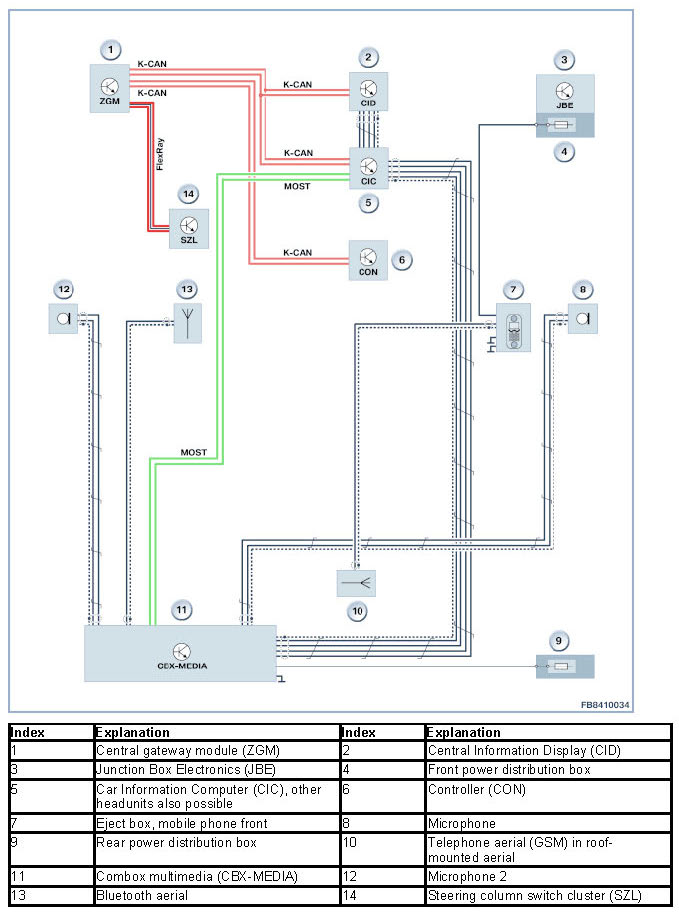
Functional networking USB audio interface (SA6FL) or extended connectivity of the music player in the mobile phone (SA6FN)
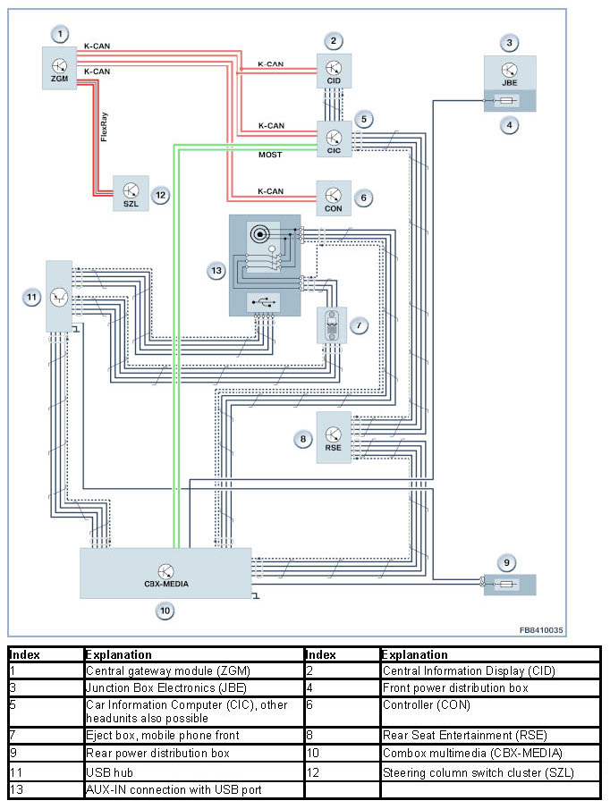
System functions
Compatible Bluetooth mobile phones
Mobile phones and audio devices can be connected with the Combox via Bluetooth. In order to offer the customer a simpler and clearer overview of which devices are compatible, the Internet page http://www.bmw.com/bluetooth will be revised. From 03/2010, the customer will be able to see on this Internet page which functionalities of which device are compatible with the Combox . The focus will be on the following information:
- Information on which mobile phone is basically compatible in which function.
- Information on whether a specific mobile phone is compatible in detail in which function.
- Information on how the compatibility of a specific mobile phone with a specific vehicle can be improved (e. g. by means of a software update).
Customers who already own a BMW vehicle will be able to identify their vehicle via the vehicle identification number. In the first step, the database will only list mobile phones.
As of 09/2010, audio devices and other devices which can be connected with the Combox via Bluetooth will be added.
As of 03/2010, the data entered will only apply to vehicles in the European version and then, as of 09/2010, data for all vehicles will be available. The database will also include earlier vehicle data.
Customer-initiated software update (KISA)
With the installation of the Combox, for the first time, the customer will be able to update the software of a system component (operation via menu in the central information display). To do this, the necessary software must be downloaded from http://www.bmw.de/update and stored on a USB stick. Any conventional USB stick with sufficient storage capacity can be used. The software is then transferred from the USB stick to the Combox via the USB audio interface (SA6FL) in the centre console and automatically updated.
Notes for Service department
General notes
The first Combox software update is expected to be available as of 06/2009. If after that time a vehicle with Combox is programmed to integration level, a manual software update must subsequently be carried out via USB (vehicle with USB audio interface SA6FL). Information on this will be provided via PuMA (Product and Measures Management Aftersales). It is planned that as of 09/2010, Service department employees will be able to ascertain via the workshop system whether the customer has already carried out a software update. In this case, the software update must be carried out by the Service department employee when the Combox is replaced or programmed to integration level. If the customer had carried out a software update and there is no USB audio interface (SA6FL) present, the software update must be carried out via BMW Online (via mobile phone network).
NOTE: The Combox is mounted without a holder.
The housing of the Combox is designed for mounting without a holder. However, without a holder, in the event of a crash, the impact energy of the accident will be transferred directly to the control unit. In the event of an accident, the control unit must be checked for external damage.
We can assume no liability for printing errors or inaccuracies in this document and reserve the right to introduce technical modifications at any time.
Diagnosis instructions
At present, it is not possible to carry out a function check of the new Bluetooth aerial with the diagnosis system, as the system does not detect the Bluetooth aerial as plugged in, although it is connected.
We can assume no liability for printing errors or inaccuracies in this document and reserve the right to introduce technical modifications at any time.